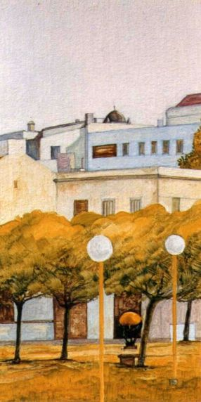
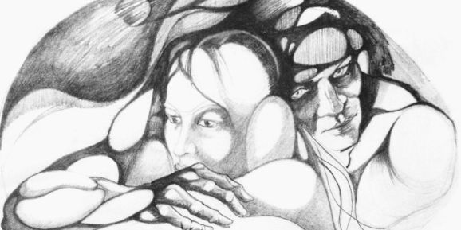
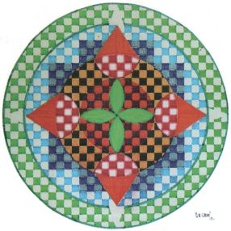
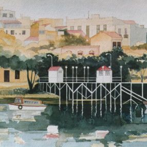
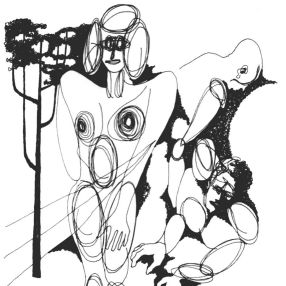
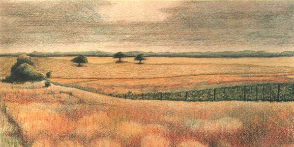
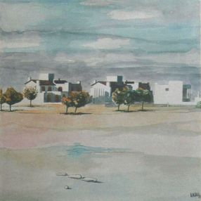
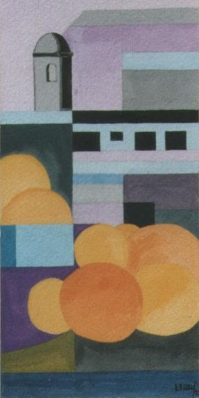

Galería
Estos son algunos de mis trabajos artísticos.
En los últimos tiempos he comenzado a pintar más, y esto me ha abierto campos; pero igualmente lo que pinto tiene que ver con el dibujo.
Hecha un vistazo a algunos de mis cuadros.








Un poco el sentido de mi obra es mostrar que en mi pintura existen paisajes realistas y otros más estilizados, y dentro de los dibujos una línea más suelta y otra más estructurada. Y todo esto va en simultáneo, sin que sienta que hay una contradicción.